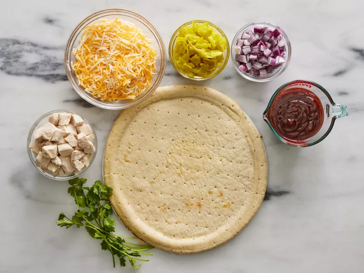
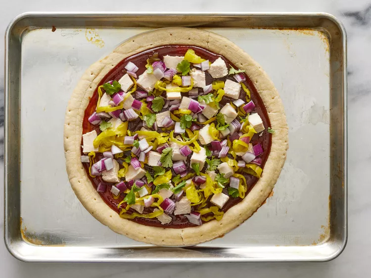
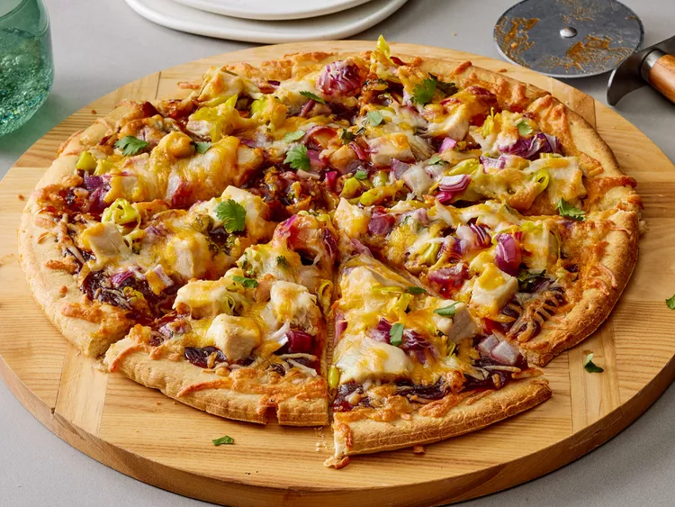

Chicken BBQ Pizza

Description
For a mouthwatering BBQ Chicken Pizza, start with a pre-baked 12-inch pizza crust. Preheat your oven to 350°F (175°C) and set the crust on a baking sheet. Spread a generous layer of spicy barbecue sauce over the crust, then top it with diced, cooked chicken breast, sliced pepperoncini peppers, and chopped red onion. Sprinkle fresh cilantro on top for an extra burst of flavor.
Next, cover everything with 2 cups of shredded Colby-Jack cheese and pop it into the oven. Bake for about 15 minutes, or until the cheese is perfectly melted and bubbly. Slice it up and enjoy a fun, delicious twist on pizza that combines the smoky sweetness of barbecue with savory chicken and gooey cheese.
Ingredients
- 1 (12 inch) pre-baked pizza crust
- 1 cup spicy barbeque sauce
- 2 skinless boneless chicken breast halves, cooked and cubed
- 1 cup sliced pepperoncini peppers
- 1 cup chopped red onion
- ½ cup chopped fresh cilantro
- 2 cups shredded Colby-Jack cheese
Steps
- Gather all ingredients. Preheat the oven to 350 degrees F (175 degrees C).

- Place pizza crust on a baking sheet. Spread barbeque sauce on crust.

- Top with chicken, pepperoncini peppers, onion, and cilantro.

- Cover with a generous amount of Colby-Jack cheese.

- Bake in the preheated oven until cheese is melted and bubbly, about 15 minutes.
